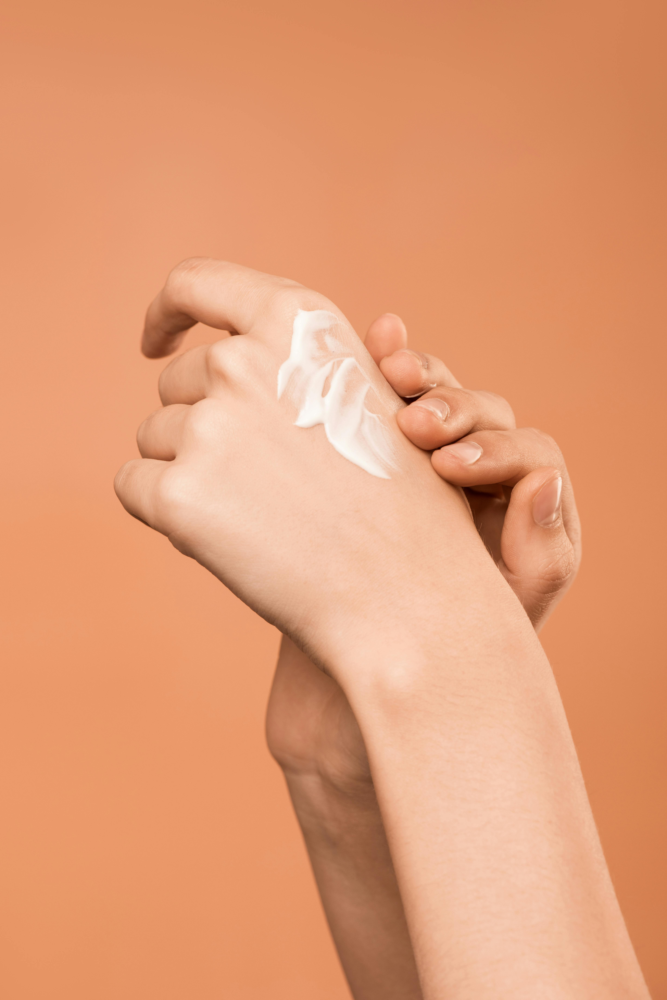
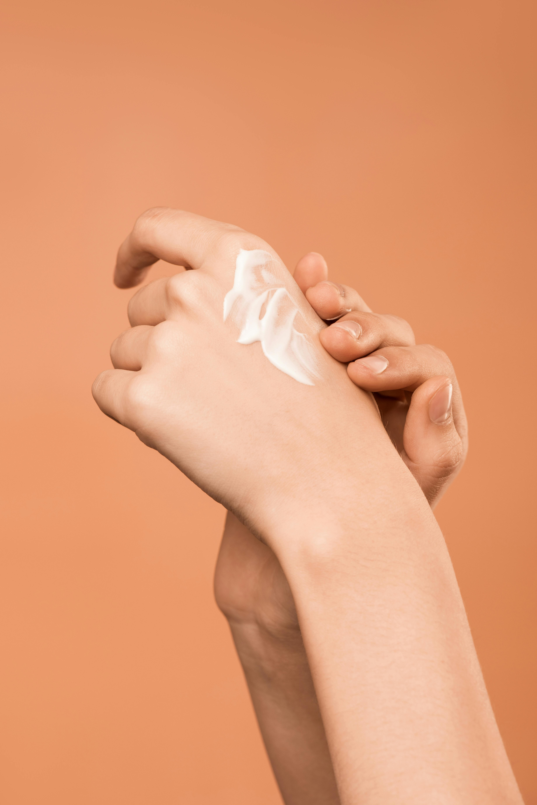

We Are BADOOM!
 

About Us
Welcome to BADOOM, where your wellbeing is our priority.
At our state-of-the-art skincare community, we are dedicated to providing best suited skincare and wellbeing routine for every individual with the help of our professionals.
At BADOOM, we offer a wide range of natural skin care products and offer the knowledge to get to know your skintype and help you analyze best suited products and routines.
Whether you're seeking lotions for everyday use, or cleansers for occasion,
our dedicated staff is here to guide you on your journey to optimal wellbeing from inside out.
We understand the importance of a patient-centered approach,
therefore we call BADOOM a community, and not only a provider. We are in the boat together and ensure to provide you the best care and products available in the market.
Our modern technology equpment are equipped with the latest medical technologies,
allowing us to deliver accurate and effective treatments.
We invite you to explore our website to learn more about our services,
meet our healthcare and skincare professionals, and discover the resources we provide to support your health and wellness.
Thank you for choosing BADOOM as your trusted wellbeing partner. Your journey to better wellbeing begins here.
Feedback and Customer Success
"Before I got to know BADOOM, I was struggling with my skin for years. With the help of Maria, I discovered my skin type and that it fluctuates based on the weather.
we formed a routine and a set of products for each season and it started to work extremely well with my skin!
Now after 2 years I cannot emphisize enough how much this experience has helped me to feel better from inside out. My family noticed I am much happier and easygoing than ever before.
I keep having these skin analysis services each 6 months to ensure I am aware of which products I should be using. I highly reccommend Maria Lotioner as your guide on your wellbeing journey! "
~ Community experience and a client of 2 years (Melinda)
"Outstanding service! The team at BADOOM goes above and beyond to ensure a positive and comfortable experience. The services are well-equipped with the latest technology, and the staff is knowledgeable and attentive. I appreciate the high quality of care I consistently receive."
~ Client and a Community member of 8 years (Michael)
"I can't speak highly enough about BADOOM. The products here are top-notch, providing thorough and personalized care. The attention to detail and commitment to community well-being truly set this provider apart. Highly recommend!"
~ New to our community (Nova)